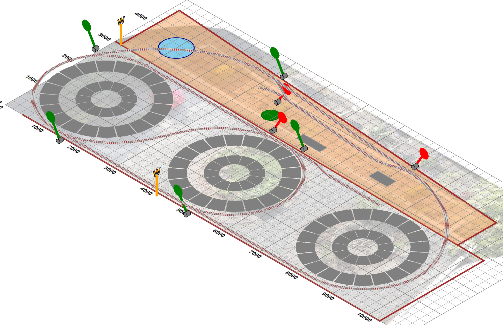

I originally built a small tool, using XSLT, that “did the geometry calculations” for a layout I was designing. A graphical view is always helpful, and generating SVG to do so was straighforward. Developing the isometric view led towards a more pictorial aspect to the output. Adding very simple animation opened the possibility of building something more akin to a “train set”, and showed some of the ways controls and active state could be mixed in an XSLT/Saxon-JS/SVG/browser environment. And this led to the idea of a demonstration at MarkupUK 2018...
The implementation needed a very small number of global JavaScript functions, that were invoked in XSLT/XPath expressions through the
Saxon-JS function mapping namespace http://saxonica.com/ns/globalJS. All the rest of the code is
XSLT3.0, with Saxon-JS extensions, generating all necessary XHTML and SVG structures, with templates fielding and processing events both
from interaction and animation. Once up and running, the system is of course stateful — the speed, direction and current track section of
engines, the switched set state of points etc. This state information is stored as attributes on the DOM tree.
Did it help with the original purpose — designing a garden railway? Well this was the layout design demonstrated at Markup2018:
Figure 21. The layout as proposed
|  |
and this is what currently exists:
Figure 22. Lady Anne on the Garden Line
|
|